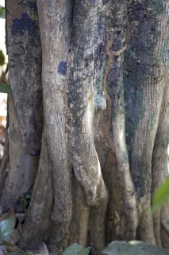
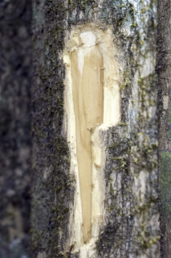
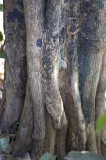
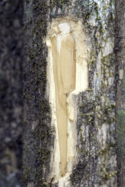

Trees up to 15 m tall.
15 ಮೀ. ಎತ್ತರದವರೆಗಿನ ಗಾತ್ರದ ಮರಗಳು.
Trees up to 15 m tall.
மரங்கள் 15 மீ. உயரம் வரை வளரக்கூடியது.
Trunk flutted; bark whitish, smooth, fissured when mature; balze yellowish.
ಕಾಂಡ ಕೊರಕಲುಗಳ ಸಮೇತವಿರುತ್ತವೆ;ತೊಗಟೆ ಬಿಳಿ ಬಣ್ಣ ಹೊಂದಿದ್ದು ನಯವಾಗಿರುತ್ತದೆ ಹಾಗೂ ಬಲಿತಾಗ ರೋಮರಹಿತವಾಗಿರುತ್ತದೆ ಮತ್ತು ಸೀಳಿಕಾ ಮಾದರಿಯಲ್ಲಿರುತ್ತದೆ.
Trunk flutted; bark whitish, smooth, fissured when mature; balze yellowish.
மரத்தண்டு குறுக்குவெட்டுத் தோற்றத்தில் ஒழுங்கற்ற வளையமானது; மரத்தின் பட்டை வெள்ளை நிறமானது, வழுவழுப்பானது, முதிரும் போது வலைப்பின்னல் பிளவுகளுடையது; உள்பட்டை மஞ்சள் நிறமானது.
Young branchlets angular to compressed, glabrous; apical bud usually exudes yellow resin.
ಎಳೆಯ ಕಿರುಕೊಂಬೆಗಳು ಉಪದುಂಡಾಗಿರುವುದರಿಂದ ಸಂಕುಚಿತವಾಗಿರುವರೆಗಿನ ಆಕಾರ ಹೊಂದಿರುತ್ತವೆ ಹಾಗೂ ರೋಮರಹಿತವಾಗಿರುತ್ತವೆ;ಅಂಕುರ ಮೊಗ್ಗು ಸಾಮಾನ್ಯವಾಗಿ ಹಳದಿ ಬಣ್ಣದ ಅಂಟು ದ್ರವವನ್ನು ಒಸರುತ್ತದೆ.
Young branchlets angular to compressed, glabrous; apical bud usually exudes yellow resin.
சிறியநுனிக்கிளைகள் குறுக்குவெட்டுத் தோற்றத்தில் கோணங்களுடையது முதல் தட்டையானது, உரோமங்களற்றது; நுனியிலுள்ள மொட்டு மஞ்சள் நிற ரெசீன் சுரக்ககூடியது.
Leaves simple, opposite, decussate; stipules narrow triangular to 0.7 cm long, glabrous; petiole 0.6-1.5 cm long, slightly canaliculate above, glabrous; lamina 10-13 x 4-7 cm, elliptic to elliptic-ovate, apex acuminate with blunt tip or obtuse, base attenuate, margin entire, coriaceous, glabrous; midrib raised above; secondary_nerves 5-8 pairs, hairy domatia present at axils; tertiary_nerves broadly reticulate.
ಎಲೆಗಳು ಸರಳವಾಗಿದ್ದು ಕತ್ತರಿಯಾಕಾರದ ಅಭಿಮುಖ ಜೋಡನಾ ವ್ಯವಸ್ಥೆಯಲ್ಲಿರುತ್ತವೆ, ಕಾವಿನೆಲೆಗಳು ಸಂಕುಚಿತ ತ್ರಿಕೋನಾಕಾರದಲ್ಲಿದ್ದು 0.7 ಸೆಂ.ಮೀ ವರೆಗಿನ ಉದ್ದ ಹೊಂದಿರುತ್ತವೆ;ತೊಟ್ಟು 0.6 –1.5 ಸೆಂ.ಮೀ.ವರೆಗಿನ ಉದ್ದವಿದ್ದು,ಸ್ವಲ್ಪಮಟ್ಟಿಗೆ ಮೇಲ್ಭಾಗದಲ್ಲಿ ಕಾಲುವೆ ಗೆರೆಯನ್ನು ಹೊಂದಿರುತ್ತದೆ ಹಾಗೂ ರೋಮರಹಿತವಾಗಿರುತ್ತವೆ;ಪತ್ರಗಳು 5 -10 X 1.5 – 3.5 ಸೆಂ.ಮೀ. ಗಾತ್ರ ಹೊಂದಿದ್ದು,ಅಂಡವೃತ್ತದಿಂದ ಅಂಡವೃತ್ತ-ಅಂಡದವರೆಗಿನ ಆಕಾರ ಹೊಂದಿದ್ದು,ಮೊಂಡಾಗ್ರವುಳ್ಳ ಕ್ರಮೇಣ ಚೂಪಾಗುವ ಅಥವಾ ಚೂಪಲ್ಲದ ತುದಿ, ಒಳಬಾಗಿದ ಬುಡ, ನಯವಾದ ಅಂಚು ಹೊಂದಿದ್ದು ತೊಗಲನ್ನೋಲುವ ಮೇಲ್ಮೈ ಹೊಂದಿದ್ದು ರೋಮರಹಿತವಾಗಿರುತ್ತವೆ ; ಮಧ್ಯನಾಳ ಪತ್ರದ ಮೇಲ್ಭಾಗದಲ್ಲಿ ಉಬ್ಬಿರುತ್ತವೆ ; ಎರಡನೇ ದರ್ಜೆಯ ನಾಳಗಳು 5 -8 ಜೋಡಿಗಳಿರುತ್ತವೆ ಮತ್ತುಅಕ್ಷಾಕಂಕುಳಿನಲ್ಲಿ ರೋಮಸಹಿತವಾದ ಸೂಕ್ಷ್ಮ ಸಹಜೀವಿ ಗೂಡುಗಳ ಸಮೇತವಿರುತ್ತವೆ;ಮೂರನೇ ದರ್ಜೆಯ ನಾಳಗಳು ವಿಶಾಲ ಜಾಲಬಂಧ ನಾಳ ವಿನ್ಯಾಸದಲ್ಲಿರುತ್ತವೆ.
Leaves simple, opposite, decussate; stipules narrow triangular to 0.7 cm long, glabrous; petiole 0.6-1.5 cm long, slightly canaliculate above, glabrous; lamina 10-13 x 4-7 cm, elliptic to elliptic-ovate, apex acuminate with blunt tip or obtuse, base attenuate, margin entire, coriaceous, glabrous; midrib raised above; secondary_nerves 5-8 pairs, hairy domatia present at axils; tertiary_nerves broadly reticulate.
இலைகள் தனித்தவை, எதிரடுக்கமானவை, குறுக்குமறுக்கானவை; இலையடிச்செதில் குறுகிய முக்கோணமானது, 0.7 செ.மீ. நீளமானது, உரோமங்களற்றது; இலைக்காம்பு 0.6-1.5 செ.மீ. நீளமானது, குறுக்குவெட்டுத் தோற்றத்தில் சிறிது கேனாலிகுலேட், உரோமங்களற்றது; இலை அலகு 10-13 X 4-7 செ.மீ., நீள்வட்ட வடிவானது முதல் நீள்வட்டம்-முட்டை வடிவானது, அலகின் நுனி சிறிது அதிக்கூரியதுடன் அதன் முனை மழுங்கியது அல்லது மெட்டையானது, அலகின் தளம் அட்டனுவேட், அலகின் விளிம்பு முழுமையானது, கோரியேசியஸ், உரோமங்களற்றது; மையநரம்பு மேற்புறத்தில் அலகின் பரப்பைவிட உயர்ந்து இருக்கும்; இரண்டாம் நிலை நரம்புகள் 5-8 ஜோடிகள், உரோமங்களுடைய டொமேசியா நரம்புகளின் கோணங்களில் உடையது; மூன்றாம் நிலை நரம்புகள் அகன்ற வலைப்பின்னல் போன்றவை.
Inflorescence axillary fascicles; flowers polygamodioecious, minute, sessile.
ಪುಷ್ಪಮಂಜರಿಗಳು ಅಕ್ಷಾಕಂಕುಳಿನಲ್ಲಿನ ಗುಛ್ಛಾಕಾರದ ಮಾದರಿಯವು;ಹೂಗಳು ಸಂಕೀರ್ಣಲಿಂಗಿಗಳಾಗಿದ್ದು ಗಂಡು ಮತ್ತು ಹೆಣ್ಣುಹೂಗಳು ಬೇರೆ ಬೇರೆ ಸಸ್ಯಗಳಲ್ಲಿರುತ್ತವೆ ಹಾಗೂ ತೀರಾ ಸಣ್ಣ ಗಾತ್ರ ಹೊಂದಿರುತ್ತವೆ.
Inflorescence axillary fascicles; flowers polygamodioecious, minute, sessile.
மஞ்சரி இலைக்கோணங்களில் தொகுப்பாக காணப்படுபவை; மலர்கள் பாலிகோமொடையீசியஸ், சிறியவை, காம்பற்றது.
Berry globose, up to 2 cm long; seed many, flat.
ಬೆರ್ರಿಗಳು ಗೋಳಾಕಾರದಲ್ಲಿರುತ್ತವೆ ಮತ್ತು 2 ಸೆಂ.ಮೀ. ಉದ್ದ ಹೊಂದಿರುತ್ತವೆ;ಬೀಜಗಳ ಸಂಖ್ಯೆ ಹಲವಾರು ಇದ್ದು ಚಪ್ಪಟೆಯಾಗಿರುತ್ತವೆ.
Berry globose, up to 2 cm long; seed many, flat.
முழுச்சதைகனி (பெர்ரி), கோள வடிவமானது, 2 செ.மீ. நீளமானது; விதைகள் எண்ணற்றது, தட்டையானது.

 


